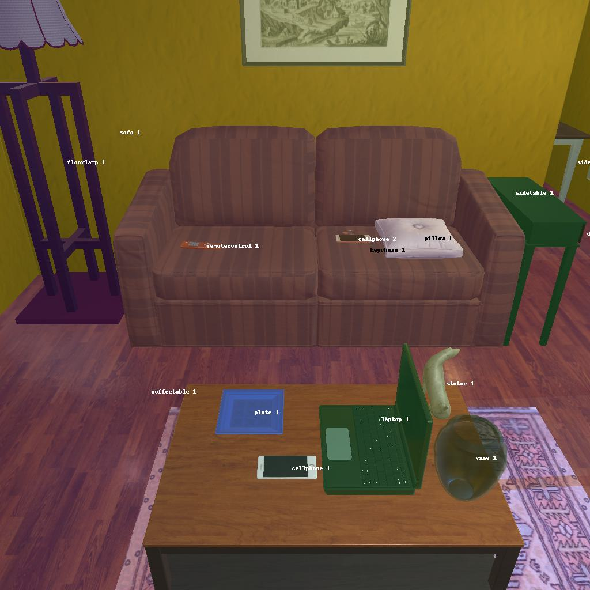

---------------------------------------------------------task: 3---------------------------------------------------------
--------------------------------------------------------------------------------------------------------------------------------------------------------------------
--------------------------------------------------------------------------------------------------------------------------------------------------------------------
Step:--------------------------------------------------------------------------1-------------------------------------------------------------------------------
----------------------------------------
VLM Prompt:
Image1:
**Instruction**
1. Analyze the provided image to identify all visible household objects, focusing on those relevant to the task description "look at plate under the floorlamp."
2. Use the analysis of the image and the task hint "The agent must find an object of the desired type, locate and turn on a light source with the desired object in-hand." to answer the question: what is the most reasonable action in the choices for the task description "look at plate under the floorlamp"?
4. Decide and write the answer using the template: The answer is: (i): , where i is the real number. If there is no desired object in the image, search every place based on **Initial Observation** to find the object. And if no one is exactly correct, choose a similar answer.
**Initial Observation**
You are in the middle of a room. Looking quickly around you, you can see armchair (1), garbagecan (1), tvstand (1), shelf (1-5), sofa (1), coffeetable (1), sidetable (1-2), drawer (1)
**Answer Choices**
(1): go to armchair 1
(2): go to garbagecan 1
(3): go to tvstand 1
(4): go to shelf 1
(5): go to shelf 2
(6): go to sofa 1
(7): go to sidetable 1
(8): go to sidetable 2
(9): go to drawer 1
(10): go to shelf 3
(11): go to shelf 4
(12): go to shelf 5
(13): take laptop 1 from coffeetable 1
(14): take vase 1 from coffeetable 1
(15): take pillow 1 from coffeetable 1
(16): take plate 1 from coffeetable 1
(17): take cellphone 1 from coffeetable 1
(18): take statue 1 from coffeetable 1
(19): take remotecontrol 1 from coffeetable 1
(20): take cellphone 2 from coffeetable 1
(21): take keychain 1 from coffeetable 1
(22): use floorlamp 1
(23): examine coffeetable 1
**Answer**
Let's think step by step by following the instructions.
----------------------------------------
----------------------------------------
Original Response:
The task description is "look at plate under the floorlamp." From the image, we can identify that there is a plate (plate 1) on the coffee table, and there is a floorlamp (floorlamp 1) next to the sofa.
According to the task hint, the agent must find the object of the desired type (plate), locate and turn on a light source (floorlamp) with the desired object in-hand. Therefore, the agent needs to take the plate from the coffee table and then use the floorlamp to look at the plate under the light.
From the answer choices given, the most reasonable actions to complete the task would be to first take the plate from the coffee table and then use the floorlamp.
The answer is: (16): take plate 1 from coffeetable 1, followed by (22): use floorlamp 1.
----------------------------------------
----------------------------------------
>>> Refine Original VLM Response and Get Pure Action: take plate 1 from coffeetable 1, followed by (22): use floorlamp 1
----------------------------------------
-----------------------------------------------------------------
Running time: 10.231572389602661 seconds
Total Money: 0.8514500000000002
-----------------------------------------------------------------
-----------------------------------------------------------------
Text Observation:You pick up the plate 1 from the floorlamp 1.
-----------------------------------------------------------------
UNSUCCEED